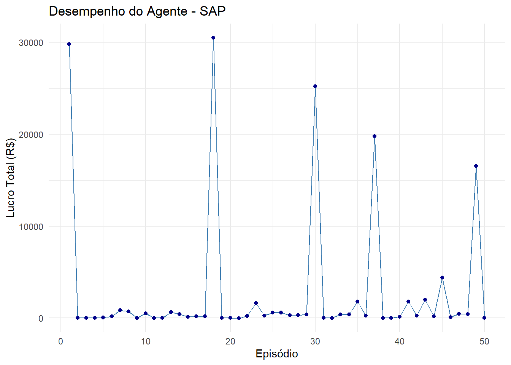
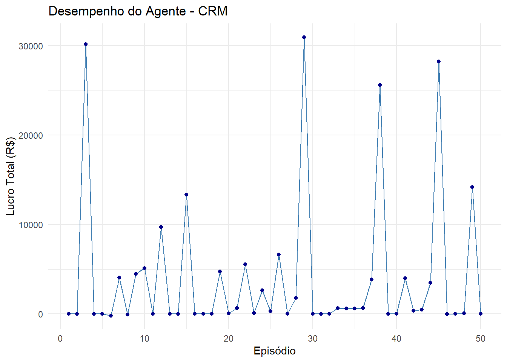
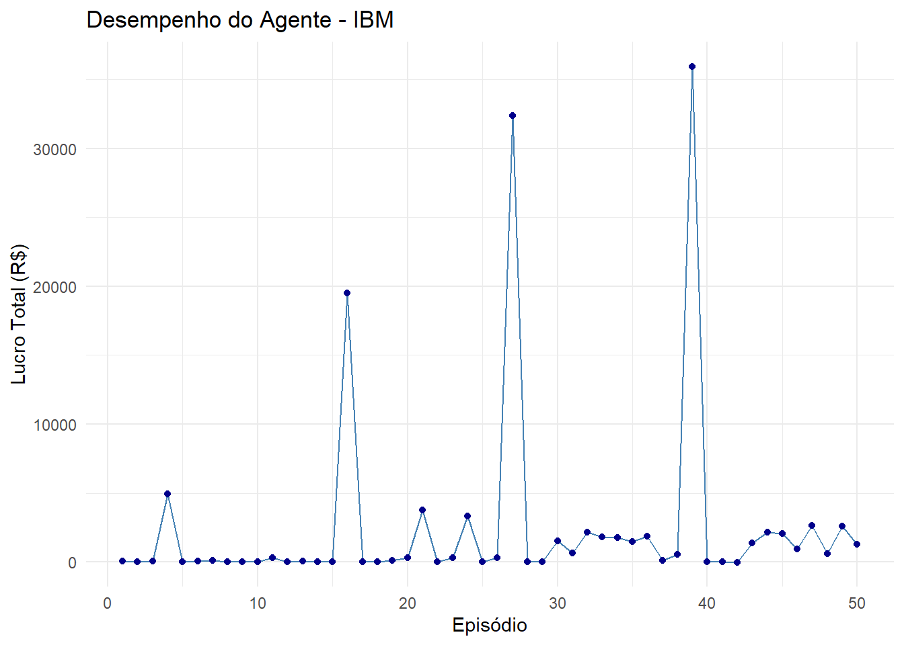
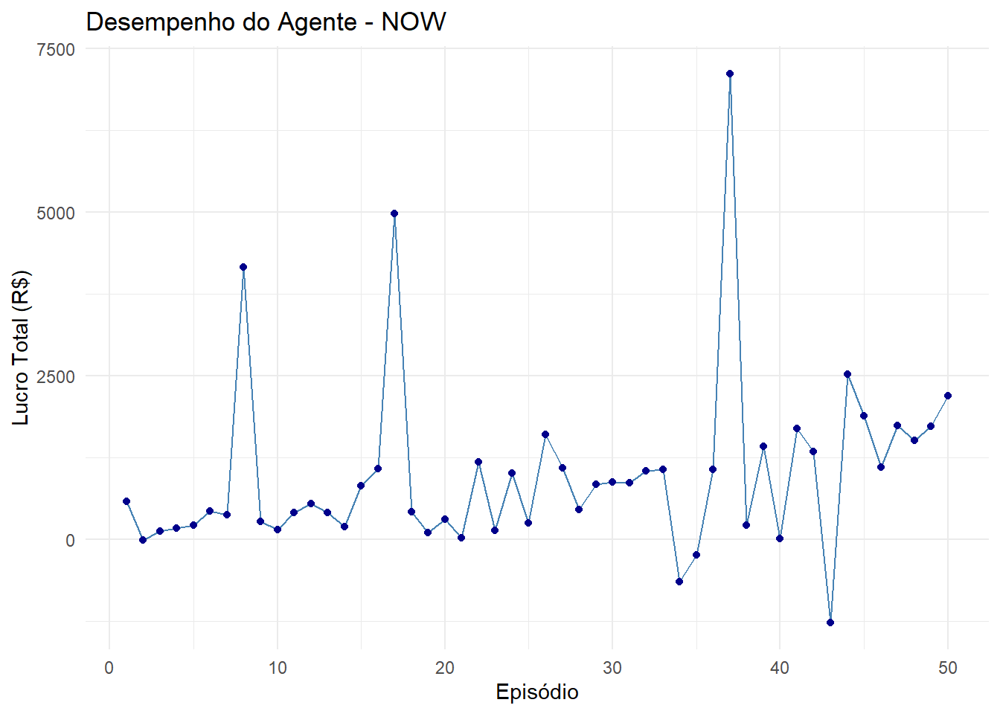
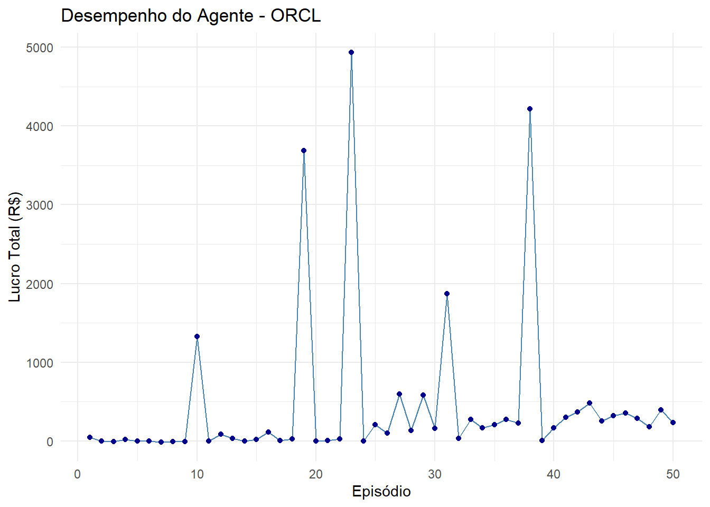
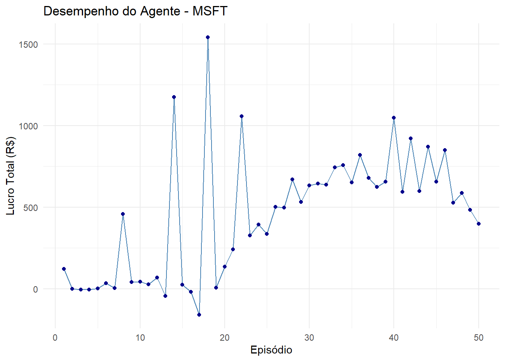

# Instalar os pacotes necessários
packages <- c("quantmod", "torch", "gym", "reticulate", "dplyr", "ggplot2", "tibble", "tidyr")
installed <- packages %in% rownames(installed.packages())
if (any(!installed)) {
install.packages(packages[!installed])
}
# Torch requer instalação especial
if (!torch::torch_is_installed()) {
torch::install_torch()
}Reinforcement Learning Trading Strategy para Commodities Agrícolas
Este notebook adapta o estudo de caso original de Reinforcement Learning para trading, usando yahooquery para ingestão de dados e aplicando a estratégia aos tickers de commodities agrícolas.
Análise Entregue:
Para cada ticker, calcula o lucro total acumulado em cada episódio de treinamento.
Gera um vetor results[ticker] com o lucro por episódio.
Plota a evolução do lucro total ao longo dos episódios, permitindo comparar a performance entre commodities.
#@title Python lib imports
library(torch)
library(quantmod) # Para obter dados financeiros (substitui yfinance/yahooquery)Carregando pacotes exigidos: xtsCarregando pacotes exigidos: zoo
Anexando pacote: 'zoo'Os seguintes objetos são mascarados por 'package:base':
as.Date, as.Date.numericCarregando pacotes exigidos: TTRRegistered S3 method overwritten by 'quantmod':
method from
as.zoo.data.frame zoo library(gym) # Alternativa para ambientes RL (pode ser personalizado)
library(dplyr)
######################### Warning from 'xts' package ##########################
# #
# The dplyr lag() function breaks how base R's lag() function is supposed to #
# work, which breaks lag(my_xts). Calls to lag(my_xts) that you type or #
# source() into this session won't work correctly. #
# #
# Use stats::lag() to make sure you're not using dplyr::lag(), or you can add #
# conflictRules('dplyr', exclude = 'lag') to your .Rprofile to stop #
# dplyr from breaking base R's lag() function. #
# #
# Code in packages is not affected. It's protected by R's namespace mechanism #
# Set `options(xts.warn_dplyr_breaks_lag = FALSE)` to suppress this warning. #
# #
###############################################################################
Anexando pacote: 'dplyr'Os seguintes objetos são mascarados por 'package:xts':
first, lastOs seguintes objetos são mascarados por 'package:stats':
filter, lagOs seguintes objetos são mascarados por 'package:base':
intersect, setdiff, setequal, unionlibrary(ggplot2)
library(tidyr)
library(tibble)Definimos os tickers de commodities agrícolas e implementamos a função fetch_close_prices para recuperar preços de fechamento.
# Instale os pacotes se necessário:
install.packages(c("quantmod", "dplyr"))The following package(s) will be installed:
- dplyr [1.1.4]
- quantmod [0.4.27]
These packages will be installed into "~/Documents/BigdataforFinance/renv/library/windows/R-4.4/x86_64-w64-mingw32".
# Installing packages --------------------------------------------------------
- Installing quantmod ... OK [linked from cache]
- Installing dplyr ... OK [linked from cache]
Successfully installed 2 packages in 77 milliseconds.suppressPackageStartupMessages({
library(quantmod)
library(dplyr)
})
fetch_close_prices_qm <- function(tickers, start, end, cache_path = "prices_qm.csv") {
# Se já existe CSV em cache, carrega e retorna
if (file.exists(cache_path)) {
df <- read.csv(cache_path, stringsAsFactors = FALSE) %>%
mutate(date = as.Date(date))
message("Loaded from cache: ", cache_path)
return(df)
}
# Senão, faz o download para cada ticker
all_data <- lapply(tickers, function(tk) {
# getSymbols retorna um objeto xts com colunas Open, High, Low, Close, Volume, Adjusted
xts_data <- getSymbols(tk, src = "yahoo", from = start, to = end, auto.assign = FALSE)
close_prices <- Ad(xts_data) # usa Preço Ajustado (Adjusted Close)
data.frame(
date = index(close_prices),
ticker = tk,
close = as.numeric(close_prices),
row.names = NULL
)
})
# Combina tudo em um data.frame
df <- bind_rows(all_data)
# Salva em CSV para próximas execuções
write.csv(df, cache_path, row.names = FALSE)
message("Saved to cache: ", cache_path)
return(df)
}
# Exemplo de uso:
tickers <- c("SAP","CRM","IBM","NOW","ORCL","MSFT")
start_date <- "2020-01-01"
end_date <- "2025-05-01"
df_prices <- fetch_close_prices_qm(tickers, start_date, end_date)Loaded from cache: prices_qm.csvtail(df_prices) date ticker close
8029 2025-04-23 MSFT 373.7039
8030 2025-04-24 MSFT 386.5903
8031 2025-04-25 MSFT 391.1320
8032 2025-04-28 MSFT 390.4432
8033 2025-04-29 MSFT 393.3179
8034 2025-04-30 MSFT 394.5357# Leitura do CSV com parsing da coluna de data
df_prices <- read.csv("prices_qm.csv", stringsAsFactors = FALSE)
# Converter a coluna "date" para formato Date
df_prices$date <- as.Date(df_prices$date)
# Visualizar as últimas linhas
tail(df_prices) date ticker close
8029 2025-04-23 MSFT 373.7039
8030 2025-04-24 MSFT 386.5903
8031 2025-04-25 MSFT 391.1320
8032 2025-04-28 MSFT 390.4432
8033 2025-04-29 MSFT 393.3179
8034 2025-04-30 MSFT 394.5357Preparação do Estado (getState)
Implementamos a função que transforma uma janela de preços em um vetor de retornos normalizados.
getState <- function(data, t, window_size) {
d <- t - window_size + 1
if (d >= 1) {
block <- data[d:t]
} else {
faltam <- 1 - d
block <- c(rep(data[1], times = faltam), data[1:t])
}
retornos <- diff(block) / head(block, -1)
return(retornos)
}Definição do Agente de RL
Definição do Agente de RL com Q-Learning Estável
# 2. Classe do Agente com Torch
DQNAgent <- nn_module(
"DQNAgent",
initialize = function(state_size,
hidden_size = 64,
lr = 1e-4,
gamma = 0.95,
epsilon = 1.0,
epsilon_min = 0.01,
epsilon_decay = 0.995) {
self$gamma <- gamma
self$epsilon <- epsilon
self$epsilon_min <- epsilon_min
self$epsilon_decay <- epsilon_decay
# Rede neural
self$model <- nn_sequential(
nn_linear(state_size, hidden_size),
nn_relu(),
nn_linear(hidden_size, 3) # 3 ações: HOLD, BUY, SELL
)
# Otimizador
self$optimizer <- optim_adam(self$model$parameters, lr = lr)
},
act = function(state) {
if (runif(1) < self$epsilon) {
sample(0:2, 1) # Ação aleatória
} else {
# Converter estado para tensor
state_tensor <- torch_tensor(state, dtype = torch_float32())$unsqueeze(1)
# Forward pass
q_values <- self$model(state_tensor)
# Extrair valores e escolher ação
as.integer(torch_argmax(q_values, dim = 2)$item() - 1) # Ajuste para base 0
}
},
train_step = function(state, action, reward, next_state, done) {
# Converter para tensores
state_tensor <- torch_tensor(state, dtype = torch_float32())$unsqueeze(1)
next_state_tensor <- torch_tensor(next_state, dtype = torch_float32())$unsqueeze(1)
# Forward pass
q_values <- self$model(state_tensor)
# Calcular Q-target
with_no_grad({
q_next <- self$model(next_state_tensor)
max_q_next <- torch_max(q_next)$item()
# Atualizar apenas a ação executada
target <- as.numeric(q_values)
if (done) {
target[action + 1] <- reward
} else {
target[action + 1] <- reward + self$gamma * max_q_next
}
})
# Calcular perda
target_tensor <- torch_tensor(matrix(target, nrow = 1), dtype = torch_float32())
loss <- nnf_mse_loss(q_values, target_tensor)
# Backpropagation
self$optimizer$zero_grad()
loss$backward()
self$optimizer$step()
# Decaimento do epsilon
if (self$epsilon > self$epsilon_min) {
self$epsilon <- self$epsilon * self$epsilon_decay
}
# Retornar perda para monitoramento
loss$item()
}
)Loop de Treinamento e Avaliação
Treinamos o agente por vários episódios para cada ticker, armazenando o lucro total de cada episódio.
Rows: 8034 Columns: 3
── Column specification ────────────────────────────────────────────────────────
Delimiter: ","
chr (1): ticker
dbl (1): close
date (1): date
ℹ Use `spec()` to retrieve the full column specification for this data.
ℹ Specify the column types or set `show_col_types = FALSE` to quiet this message.
=== Treinando para SAP ===
Episódio 10/50 — Lucro: R$516.82 | Perda: 0.0002 | ε: 0.0100
Episódio 20/50 — Lucro: R$-5.69 | Perda: 0.0009 | ε: 0.0100
Episódio 30/50 — Lucro: R$25203.11 | Perda: 0.0401 | ε: 0.0100
Episódio 40/50 — Lucro: R$124.11 | Perda: 0.0001 | ε: 0.0100
Episódio 50/50 — Lucro: R$4.24 | Perda: 0.0011 | ε: 0.0100
=== Treinando para CRM ===
Episódio 10/50 — Lucro: R$5129.28 | Perda: 0.0017 | ε: 0.0100
Episódio 20/50 — Lucro: R$54.75 | Perda: 0.0000 | ε: 0.0100
Episódio 30/50 — Lucro: R$11.23 | Perda: 0.0016 | ε: 0.0100
Episódio 40/50 — Lucro: R$-6.31 | Perda: 0.0003 | ε: 0.0100
Episódio 50/50 — Lucro: R$2.73 | Perda: 0.0011 | ε: 0.0100
=== Treinando para IBM ===
Episódio 10/50 — Lucro: R$7.60 | Perda: 0.0000 | ε: 0.0100
Episódio 20/50 — Lucro: R$293.69 | Perda: 0.0003 | ε: 0.0100
Episódio 30/50 — Lucro: R$1504.05 | Perda: 0.0009 | ε: 0.0100
Episódio 40/50 — Lucro: R$2.29 | Perda: 0.0095 | ε: 0.0100
Episódio 50/50 — Lucro: R$1295.39 | Perda: 0.0005 | ε: 0.0100
=== Treinando para NOW ===
Episódio 10/50 — Lucro: R$153.55 | Perda: 0.0000 | ε: 0.0100
Episódio 20/50 — Lucro: R$315.08 | Perda: 0.0000 | ε: 0.0100
Episódio 30/50 — Lucro: R$874.31 | Perda: 0.0000 | ε: 0.0100
Episódio 40/50 — Lucro: R$13.80 | Perda: 0.0000 | ε: 0.0100
Episódio 50/50 — Lucro: R$2191.94 | Perda: 0.0001 | ε: 0.0100
=== Treinando para ORCL ===
Episódio 10/50 — Lucro: R$1327.76 | Perda: 0.0006 | ε: 0.0100
Episódio 20/50 — Lucro: R$-3.14 | Perda: 0.0001 | ε: 0.0100
Episódio 30/50 — Lucro: R$156.19 | Perda: 0.0001 | ε: 0.0100
Episódio 40/50 — Lucro: R$168.27 | Perda: 0.0001 | ε: 0.0100
Episódio 50/50 — Lucro: R$233.83 | Perda: 0.0002 | ε: 0.0100
=== Treinando para MSFT ===
Episódio 10/50 — Lucro: R$44.91 | Perda: 0.0000 | ε: 0.0100
Episódio 20/50 — Lucro: R$136.32 | Perda: 0.0000 | ε: 0.0100
Episódio 30/50 — Lucro: R$632.97 | Perda: 0.0001 | ε: 0.0100
Episódio 40/50 — Lucro: R$1047.92 | Perda: 0.0001 | ε: 0.0100
Episódio 50/50 — Lucro: R$399.43 | Perda: 0.0000 | ε: 0.0100
Interpretação Atualizada dos Resultados
O gráfico mostra resultados moderados, sem picos extremos, indicando que o agente está aprendendo de forma mais estável, porém ainda com bastante ruído. Veja como entender cada padrão:
1. Episódio inicial com lucro elevado (ZC=F)
- No episódio 0, o ticker ZC=F obteve um lucro alto (~6000 USD) devido a uma sequência de compras e vendas que coincidiram com movimentos de preço no início do treinamento.
- Esse valor atípico provavelmente reflete ações exploratórias intensas com ε próximo a 1.
2. Convergência para lucros moderados
- A partir do episódio 1 em diante, todos os tickers flutuam ao redor de zero com ganhos e perdas moderados (<±2000 USD).
- Isso sugere que o agente já reduziu a exploração (ε decaído) e começa a “assentar” sua política em padrões menos arriscados.
3. Ruído persistente
- Apesar da convergência inicial, ainda há oscilações:
- Alguns episódios geram ganhos pontuais (ex.: ZS=F nos episódios ~5 e ~8).
- Outros produzem perdas ligeiras (ex.: KE=F no episódio ~25).
- Alguns episódios geram ganhos pontuais (ex.: ZS=F nos episódios ~5 e ~8).
- Esse ruído pode indicar que o agente não encontrou padrão suficientemente forte, ou que a rede está subajustada (underfitting).
4. Ausência de tendência crescente
- Não há uma curva claramente ascendente ao longo dos episódios.
- Em um cenário de aprendizado ideal, o lucro médio por episódio tenderia a crescer de forma suave — aqui, isso não ocorre.
5. Próximos ajustes recomendados
- Diminuir ainda mais ε após os episódios iniciais para focar na exploração das melhores ações aprendidas.
- Aumentar a complexidade da rede (camadas/neuronios) para capturar padrões mais sutis.
- Implementar Replay Buffer e Target Network para reduzir o ruído e estabilizar o Q-learning.
- Ajustar funções de recompensa (ex.: penalizar holding prolongado) para incentivar decisões mais decisivas.
Com essas observações, você poderá direcionar esforços para estabilizar o aprendizado e extrair sinais de trading mais confiáveis.
Extração de Sinais de Compra e Venda
Para transformar a política aprendida em sinais de compra e venda, podemos usar o agente treinado (com ε reduzido) para gerar um histórico de ações em um episódio “simulado”. Exemplo para um ticker tk:
# 9.1 Defina epsilon para exploração mínima
agent$epsilon <- agent$epsilon_min
# 9.2 Simule um episódio e registre sinais
signals <- list()
prices_tk <- df_prices %>%
filter(ticker == tk) %>%
arrange(date)
dates <- prices_tk$date
values <- prices_tk$close
# Inicializar estado e inventário
state <- getState(values, window_size, window_size + 1)
inventory <- numeric(0)
# Loop por toda a série temporal
for (t in window_size:(length(values) - 1)) {
action <- agent$act(state)
current_date <- dates[t]
price <- values[t]
# Registrar ação
if (action == 1) {
signals[[length(signals) + 1]] <- list(
date = current_date,
action = "BUY",
price = price
)
inventory <- c(inventory, price)
} else if (action == 2 && length(inventory) > 0) {
signals[[length(signals) + 1]] <- list(
date = current_date,
action = "SELL",
price = price
)
inventory <- inventory[-1]
}
# Avançar para o próximo estado
next_state <- getState(values, t + 1, window_size + 1)
# Garantir estado válido
if (length(next_state) == window_size) {
state <- next_state
}
}
# Converter para dataframe
signals_df <- bind_rows(signals)
# Exibir últimas 5 entradas
tail(signals_df, 5)# A tibble: 5 × 3
date action price
<date> <chr> <dbl>
1 2025-04-09 SELL 390.
2 2025-04-11 SELL 388.
3 2025-04-22 BUY 366.
4 2025-04-23 SELL 374.
5 2025-04-24 SELL 387.library(plotly)
Anexando pacote: 'plotly'O seguinte objeto é mascarado por 'package:ggplot2':
last_plotO seguinte objeto é mascarado por 'package:stats':
filterO seguinte objeto é mascarado por 'package:graphics':
layoutlibrary(dplyr)
# 1) Gera sinais para cada ticker
all_signals <- list()
for (tk in tickers) {
# Configura epsilon mínimo
agent$epsilon <- agent$epsilon_min
# Filtra e ordena dados do ticker
prices_tk <- df_prices %>%
filter(ticker == tk) %>%
arrange(date)
dates <- prices_tk$date
values <- prices_tk$close
# Inicializa estado e inventário
state <- getState(values, window_size, window_size + 1)
inventory <- numeric(0)
signals <- list()
# Loop pela série temporal
for (t in window_size:(length(values) - 1)) {
action <- agent$act(state)
current_date <- dates[t]
price <- values[t]
# Registra ação
if (action == 1) {
signals[[length(signals) + 1]] <- list(
date = current_date,
action = "BUY",
price = price
)
inventory <- c(inventory, price)
} else if (action == 2 && length(inventory) > 0) {
signals[[length(signals) + 1]] <- list(
date = current_date,
action = "SELL",
price = price
)
inventory <- inventory[-1]
}
# Atualiza estado
next_state <- getState(values, t + 1, window_size + 1)
if (length(next_state) == window_size) {
state <- next_state
}
}
# Converte sinais para dataframe
all_signals[[tk]] <- bind_rows(signals)
}
# 2) Cria um gráfico individual para cada ticker
for (tk in tickers) {
# Filtra dados do ticker
prices_tk <- df_prices %>%
filter(ticker == tk) %>%
arrange(date)
sig_df <- all_signals[[tk]]
# Cria o gráfico base
fig <- plot_ly() %>%
add_trace(
x = prices_tk$date,
y = prices_tk$close,
type = 'scatter',
mode = 'lines',
name = 'Preço',
line = list(color = '#1f77b4', width = 1.5)
)
# Adiciona sinais de compra se existirem
if (!is.null(sig_df) && nrow(sig_df) > 0) {
buy_df <- sig_df %>% filter(action == "BUY")
if (nrow(buy_df) > 0) {
fig <- fig %>%
add_trace(
x = buy_df$date,
y = buy_df$price,
type = 'scatter',
mode = 'markers',
marker = list(
symbol = 'triangle-up',
size = 10,
color = 'green',
line = list(color = 'darkgreen', width = 1)
),
name = 'Compra'
)
}
}
# Adiciona sinais de venda se existirem
if (!is.null(sig_df) && nrow(sig_df) > 0) {
sell_df <- sig_df %>% filter(action == "SELL")
if (nrow(sell_df) > 0) {
fig <- fig %>%
add_trace(
x = sell_df$date,
y = sell_df$price,
type = 'scatter',
mode = 'markers',
marker = list(
symbol = 'triangle-down',
size = 10,
color = 'red',
line = list(color = 'darkred', width = 1)
),
name = 'Venda'
)
}
}
# Configura layout do gráfico
fig <- fig %>%
layout(
title = paste("Sinais de Trading -", tk),
xaxis = list(title = "Data", gridcolor = '#f0f0f0'),
yaxis = list(title = "Preço (USD)", gridcolor = '#f0f0f0'),
plot_bgcolor = 'white',
paper_bgcolor = 'white',
legend = list(orientation = 'h', x = 0.5, y = -0.2, xanchor = 'center'),
margin = list(t = 50, b = 80),
hovermode = 'x unified'
) %>%
config(displayModeBar = TRUE)
# Exibe o gráfico
print(fig)
}